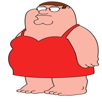

L’Humour Absurde : Pourquoi On Rit de l’Incompréhensible ?
🤪 Quand l’Incohérence Devient Hilarante
📜 Qu’est-ce que l’Humour Absurde ?
Contrairement à l’humour classique basé sur **la logique et la compréhension**, l’humour absurde repose sur **l’irrationnel, l’incohérence et l’inattendu**. Il brise les codes habituels du raisonnement et **crée la surprise**.
En France, cet humour est popularisé par des artistes comme **Les Nuls, Les Inconnus, Éric et Ramzy**, mais aussi à l’international par des groupes comme **Les Monty Python**.
📌 Les Différentes Formes d’Humour Absurde
- Les situations illogiques : "Pourquoi mettre du beurre sur une tartine ? Pour qu’elle glisse mieux sous la porte !"
- Les dialogues surréalistes : "J’ai une blague sur le temps… mais elle est trop longue à raconter."
- Les personnages décalés : Un plombier qui vient réparer un four, et personne ne trouve ça étrange.
- Les jeux de mots absurdes : "Les éléphants volent… mais seulement le mardi."
😂 Pourquoi Notre Cerveau Aime-t-il l’Absurde ?

💡 L’Inattendu, Clé du Rire
Le cerveau humain est programmé pour **anticiper et comprendre**. L’humour absurde **casse ces attentes** en nous plongeant dans une réalité illogique qui **déclenche un rire immédiat**.
📢 Exemples d’Humour Absurde Cultes
- "Si les poules avaient des dents, elles iraient chez le dentiste."
- "Pourquoi les poissons n’aiment pas les ordinateurs ? Parce qu’ils ont peur du net !"
- "Un pingouin respire par le bec. Alors s’il met un pull à col roulé, il meurt ?"
📺 L’Explosion de l’Humour Absurde sur Internet
- YouTube : Des vidéos absurdes comme celles de Mister V ou Jérôme Niel.
- Twitter : Des threads entiers dédiés à l’humour surréaliste.
- TikTok : Des montages où l’absurde est roi.
🉠Conclusion : L’Humour Absurde, une Liberté Sans Limites
L’absurde casse les codes, **crée la surprise** et permet d’échapper à une réalité trop sérieuse. C’est un humour **sans règles fixes, qui marche partout**.
📌 À retenir :
- L’humour absurde **désoriente** et **fait rire par surprise**.
- Il repose sur des dialogues **incohérents, des situations impossibles et des punchlines illogiques**.
- Les réseaux sociaux et YouTube ont permis **l’explosion de ce type d’humour**.
Et toi, quelle est la blague absurde qui te fait le plus rire ? 💬😆